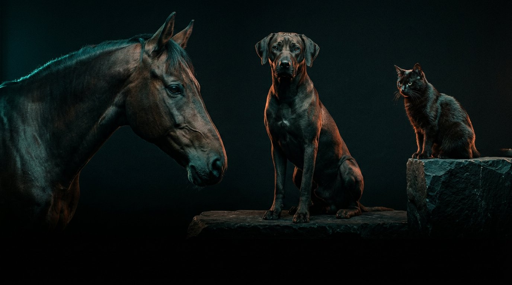
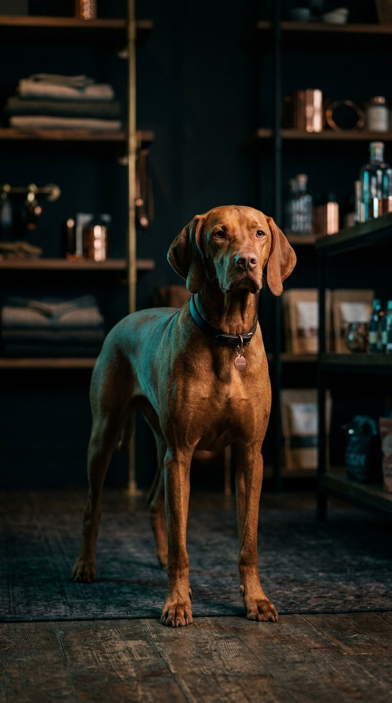
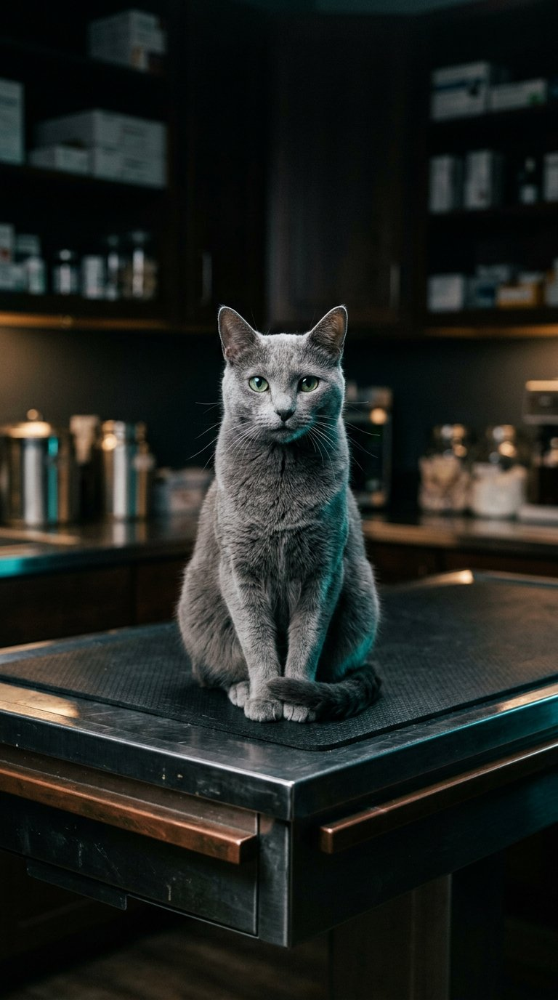
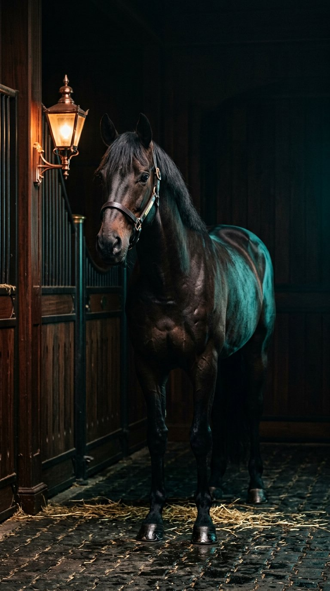
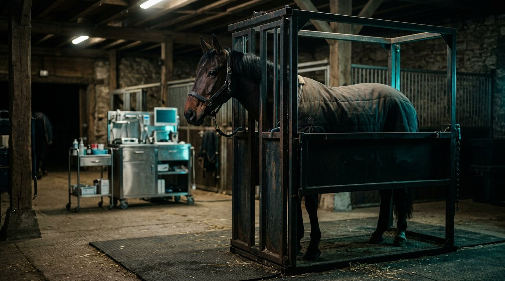
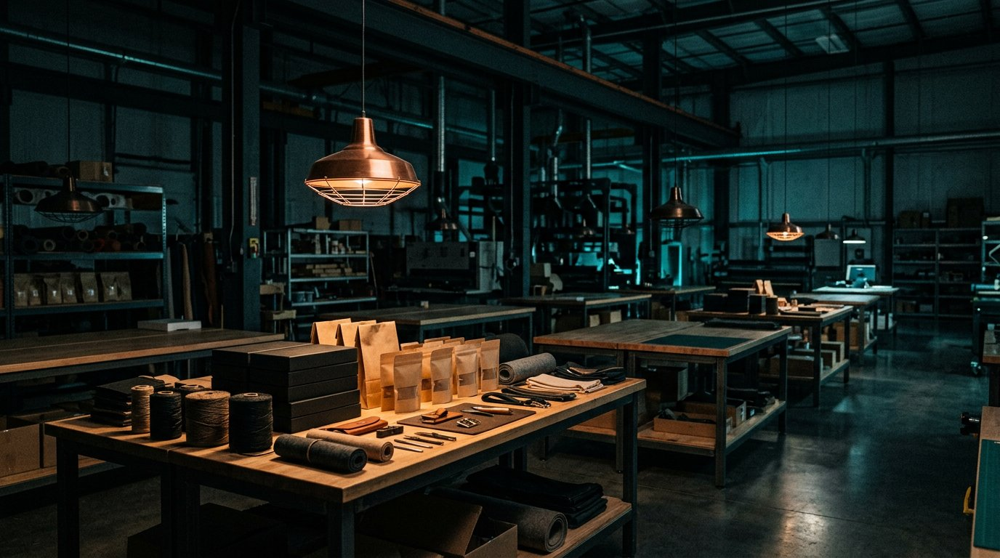

petavu.ir
چهرهٔ صنعت
اینجا صنعت خودش را نشان میدهد. عضویت از همین در آغاز میشود.

صنعت پت و اسب
پتشاپ، کلینیک، اصطبل، دامپزشک و تأمینکننده اینجا یکدیگر را پیدا میکنند. فروش به خانوار نیست؛ کار میان صنف است.
پتشاپ
مشتری قفسه را میبیند. برند، عمده و کلینیک باید شما را ببینند. پتاوو ویترین خانگی نیست؛ جای پتشاپ در شبکهٔ حرفهای است.


کلینیک پت
کلینیک سگ و گربه مرجع سلامت است نه آگهی نوبت. اینجا بهعنوان کسبوکار حرفهای دیده میشوید و به پتشاپ و تأمین وصل میمانید.
اصطبل و باشگاه
نگهداری، آموزش و سوارکاری صنف کاملاند. جای باشگاه برابر پتشاپ و کلینیک است.


دامپزشکی
دو تخصص، یک صنعت. دامپزشکان با نقش صنفی دیده میشوند تا کلینیک، اصطبل و دارو در یک شبکه پیدا شوند.
تولید و تأمین
غذا، بهداشت و تجهیزات از کارخانه و واردات به پتشاپ، کلینیک و اصطبل میرسد. بازار میانحرفهای برای همین حلقه است.

چه کسانی
ساختار
معرفی صنعت، میز کار، اداره و بازار قاطی نمیشوند. اعتماد صنعت از همین جدایی میآید.
ادامه دهید
petavu.ir
اینجا صنعت خودش را نشان میدهد. عضویت از همین در آغاز میشود.
panel.petavu.ir
کسبوکار شما، زیر نظر شما. پروفایل، تیم و وضعیت فعالیت.
adminpanel.petavu.ir
کیفیت عضویت و انتشار اینجاست — جدا از میز کار اعضا.
shop.petavu.ir
معامله میان صنف: کالا به پتشاپ، کلینیک و اصطبل. جدا از صفحهٔ معرفی.

adminshop.petavu.ir
نظارت بر کالا و سفارش؛ بدون تداخل با ادارهٔ شبکه و میز کار.
پیوند
برند ↓ توزیع ↓ عمده ↓ پتشاپ
کلینیک پت ↓ ارجاع ↓ درمان سگ و گربه
باشگاه و اصطبل ↓ دامپزشک اسب ↓ تأمین
حساب مال شماست؛ کسبوکار جدا معرفی میشود. یک نفر میتواند پتشاپ داشته باشد و در کلینیک یا باشگاه نقش دیگری.
اکنون
در حال خواندن فهرست منتشرشده…
پتاوو
عضویت برای پتشاپ، کلینیک، اصطبل، دامپزشکی، تولید و تأمین باز است. دیده شدن عمومی پس از تأیید.